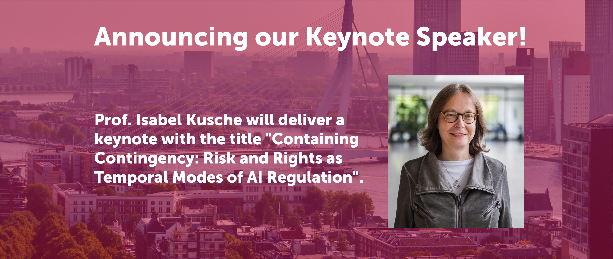
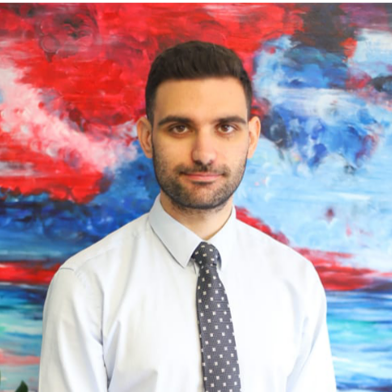
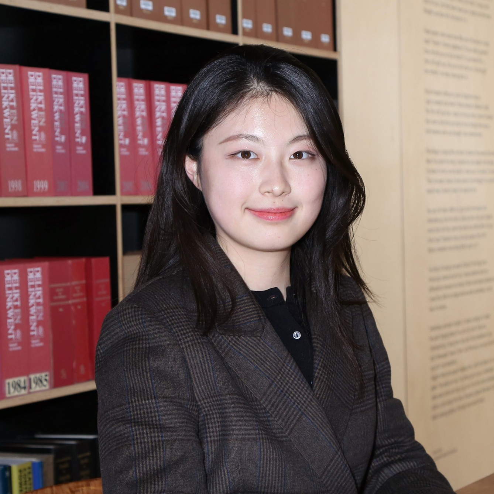
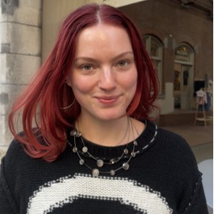
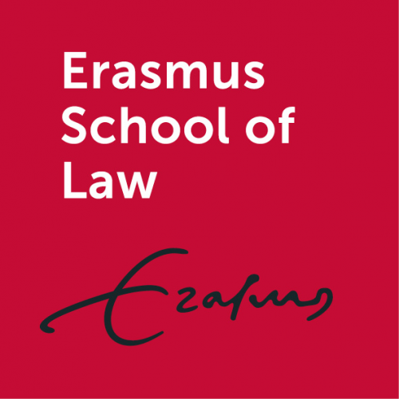
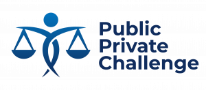

News
Preliminary Programme
The preliminary programme has been finalised, you can check it out here.Registrations have opened
We are happy to announce that the registration for the LAIR conference is open. You can register here until the 1st of June 2026. We look forward to welcoming you to Rotterdam!Keynote Announcement

About LAIR
The Law, AI and Regulation (LAIR) Conference is an international forum bringing together scholars, practitioners, and policymakers working at the intersection of law, artificial intelligence, and regulation. The first LAIR Conference was hosted in Rotterdam in June 2023 and featured keynotes, panel discussions, and lively debate on the challenges and opportunities of governing AI in an evolving regulatory landscape. Building on the success of this inaugural event, the LAIR Conference will return for its second edition in 2026, continuing to foster interdisciplinary dialogue on responsible AI governance.
Organising Team
|
 Kostina Prifti |
Julia Krämer |
 Guinan Wang |
|
Aaron Pierens |
 Jessie Levano |
David van den Bergh |
Funding Statement
This conference has been funded by the Small Grants Scheme of the research initiative on Rebalancing Public & Private Interests and Erasmus Center of Empirical Legal Studies of Erasmus School of Law and the sector plan for law funding of the Ministry of Education, Culture and Research.
|
 |
 |

|
|

|